Révèle ton potentiel. Dépasse tes limites.
Rejoins un club où le basketball développe le talent, la discipline, l’esprit d’équipe et la confiance en soi.
Travailler avec nous
Rejoindre Initiative Avenir Basketball Club, c’est intégrer une équipe passionnée qui contribue au développement des joueurs et à la vie de notre communauté sportive.
Nous sommes toujours intéressés à rencontrer des personnes motivées qui souhaitent mettre leurs compétences au service du basketball, que ce soit comme entraîneur, assistant, bénévole, responsable d’activités ou membre de notre équipe organisationnelle.
Nous recherchons avant tout des personnes dynamiques, responsables, respectueuses et capables de travailler en équipe. Une expérience dans le sport constitue un atout, mais la motivation, l’engagement et l’envie de transmettre des valeurs positives sont tout aussi importants.
Vous souhaitez participer à l’évolution du club et vivre une expérience enrichissante dans un environnement stimulant ?
Rejoignez notre équipe et contribuez avec nous à former les joueurs de demain.
Rejoignez-nous

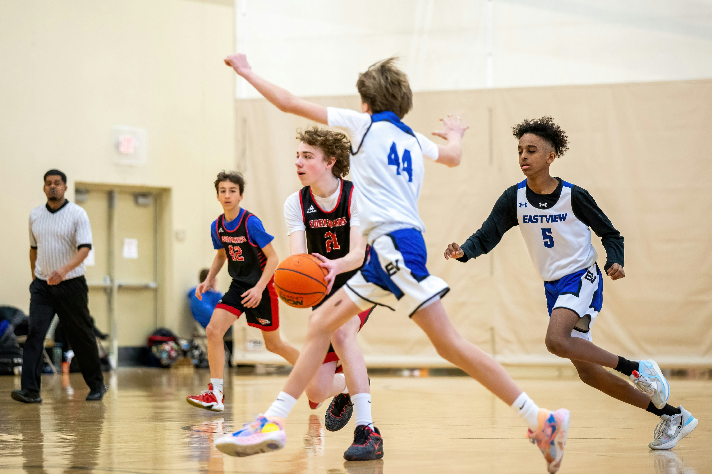
Club Junior
Un programme destiné aux jeunes joueurs qui souhaitent apprendre les bases du basketball, développer leur coordination et progresser dans un environnement amusant, sécuritaire et motivant.

Club Sénior
Un programme conçu pour les joueurs adultes qui souhaitent améliorer leur condition physique, perfectionner leur technique et participer à des entraînements et matchs compétitifs.

Équipe féminine
Un espace dynamique dédié aux joueuses de tous les niveaux pour développer leurs compétences, renforcer leur confiance et évoluer dans une équipe solidaire et ambitieuse.
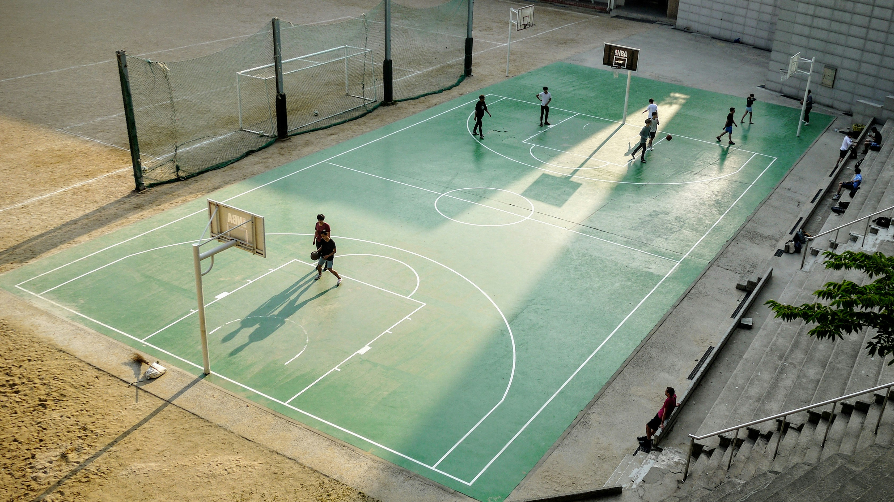
Camp d’été
Une expérience estivale combinant entraînements, jeux, défis et activités de groupe. Le camp permet aux jeunes de progresser tout en s’amusant et en créant de nouvelles amitiés.

Entraînement individuel
Un accompagnement personnalisé pour travailler les points à améliorer, perfectionner les tirs, le dribble et les déplacements, avec un programme adapté aux objectifs de chaque joueur.
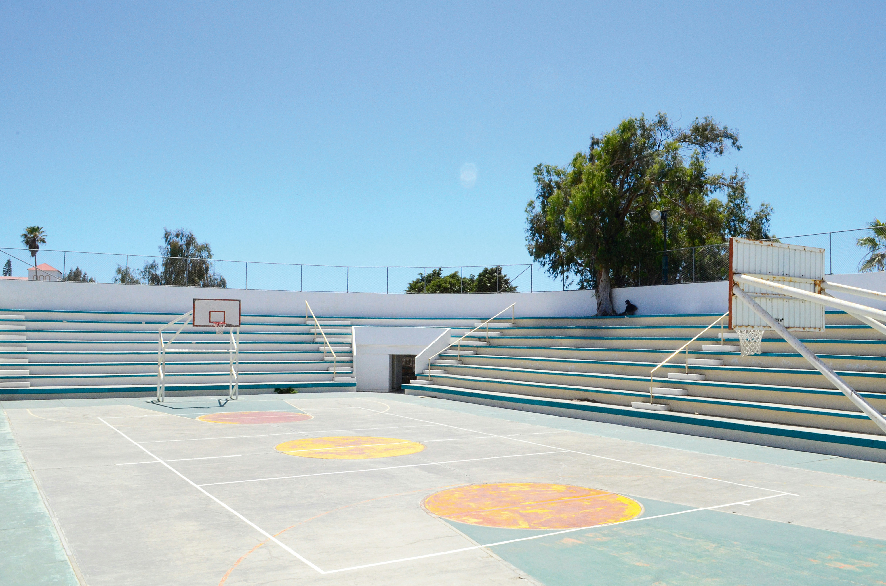
Notre aire d’entraînement est spécialement aménagée pour le développement individuel des joueurs. Elle permet de travailler le dribble, la précision des tirs et la condition physique. Les entraîneurs y proposent des exercices adaptés au niveau et aux objectifs de chaque participant. Toutes nos installations sont entretenues régulièrement afin d’offrir une expérience agréable et sécuritaire.

Notre terrain extérieur permet aux joueurs de pratiquer le basketball dans une ambiance conviviale. Il est utilisé pour les activités libres, les entraînements collectifs et les matchs amicaux. Son espace dégagé favorise le travail des déplacements, des passes et des tirs. Pendant la période estivale, il devient l’un des principaux lieux de notre camp d’été.
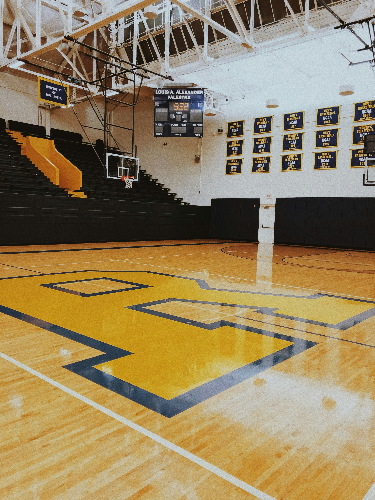
Notre terrain intérieur offre un environnement moderne et sécuritaire pour les entraînements et les matchs. Son revêtement de qualité assure une bonne adhérence et réduit les risques de blessures. Les paniers sont adaptés aux différentes catégories d’âge de notre club. Cet espace accueille les séances du club junior, du club senior et de l’équipe féminine.

Benoit Chevalier — Entraîneur principal
Benoit Chevalier possède plus de douze années d’expérience dans l’encadrement d’équipes de basketball. Ancien joueur de niveau universitaire, il a évolué au poste de meneur avant de se tourner vers l’entraînement. Il a suivi plusieurs formations en préparation physique, en stratégie de jeu et en développement des jeunes athlètes. Au cours de son parcours, il a dirigé des équipes juniors et seniors dans plusieurs compétitions régionales. Son leadership lui permet de créer une forte cohésion entre les joueurs. Il accorde une grande importance à la discipline, au respect et au dépassement de soi. Marc est particulièrement reconnu pour sa capacité à analyser rapidement les forces et les faiblesses d’une équipe.
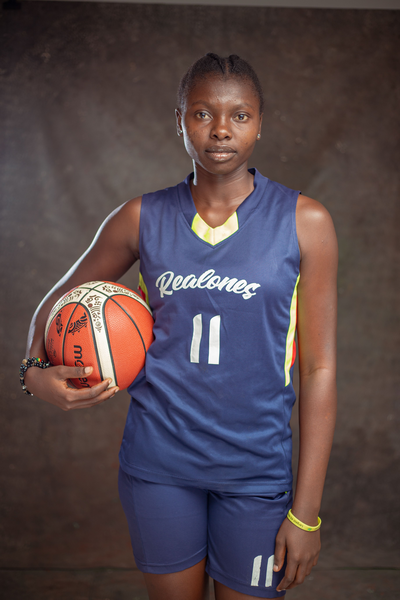
Andréanne Lamonde — Responsable de l’équipe féminine
Andréanne est une ancienne joueuse de basketball ayant participé à plusieurs championnats nationaux. Elle a commencé sa carrière comme ailière avant d’obtenir une certification en entraînement sportif. Depuis plusieurs années, elle accompagne principalement les jeunes filles et les joueuses adultes. Son expérience lui permet de comprendre les exigences physiques et mentales de la compétition. Elle encourage les joueuses à développer leur autonomie et leur esprit d’initiative. Son approche combine des entraînements exigeants avec un accompagnement humain et motivant.
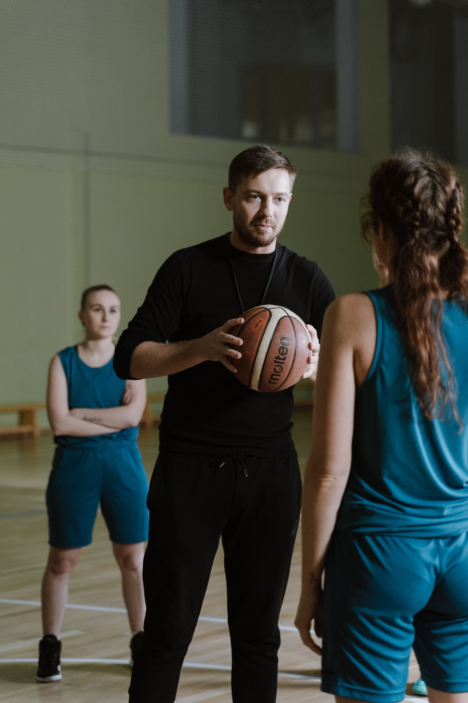
Louis Roby — Entraîneur du club junior
Louis Roby est spécialisé dans l’initiation au basketball et le développement des jeunes joueurs. Il possède une formation en éducation physique ainsi qu’une certification en encadrement sportif jeunesse. Il a commencé son parcours comme animateur dans des camps de basketball avant de devenir entraîneur. Il utilise des activités ludiques pour enseigner le dribble, les passes, les tirs et les déplacements. Sa patience lui permet de travailler efficacement avec des jeunes ayant des niveaux différents. Il valorise les efforts, les progrès et le respect des coéquipiers plutôt que la victoire à tout prix.
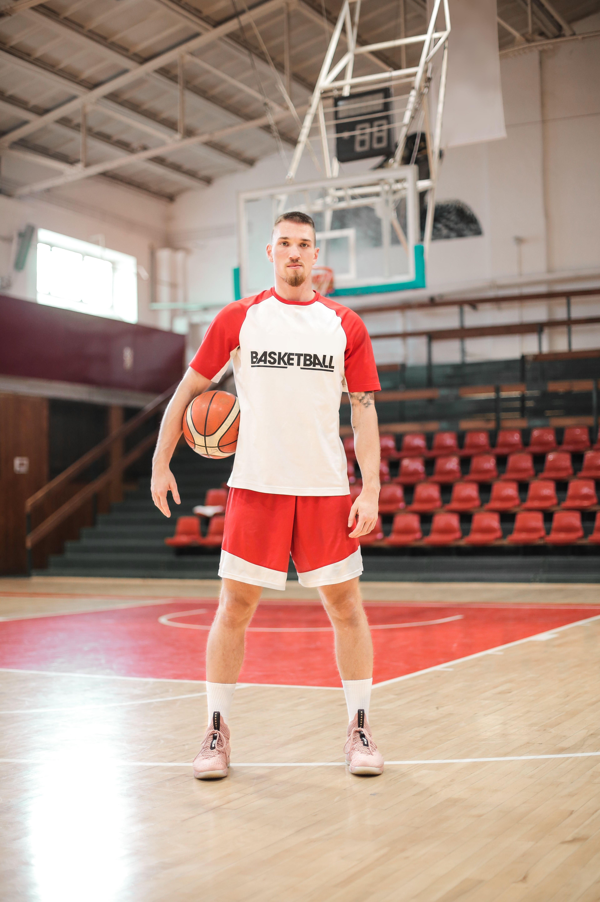
Kevin Lawson — Préparateur physique et coach individuel
Kevin Lawson est spécialisé dans la préparation physique et le perfectionnement individuel. Ancien joueur semi-professionnel, il a développé une solide expérience dans les entraînements à haute intensité. Il travaille notamment la vitesse, l’endurance, la détente, la coordination et la puissance. Ses séances individuelles sont adaptées aux objectifs et aux capacités de chaque participant. Il est reconnu pour son exigence, sa précision et son attention aux détails. Kevin analyse les mouvements des joueurs afin de corriger leur posture et d’améliorer leur efficacité.
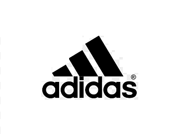
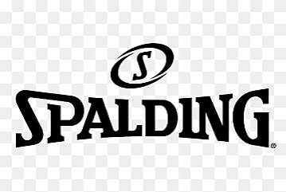
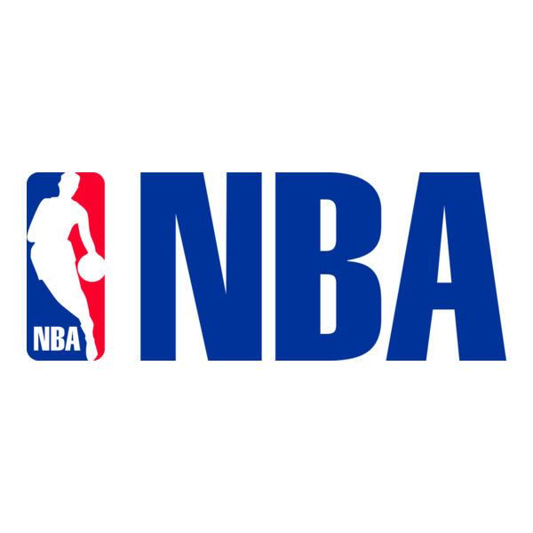
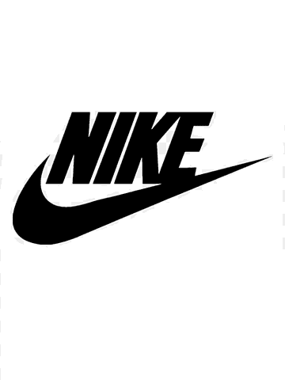
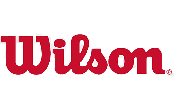